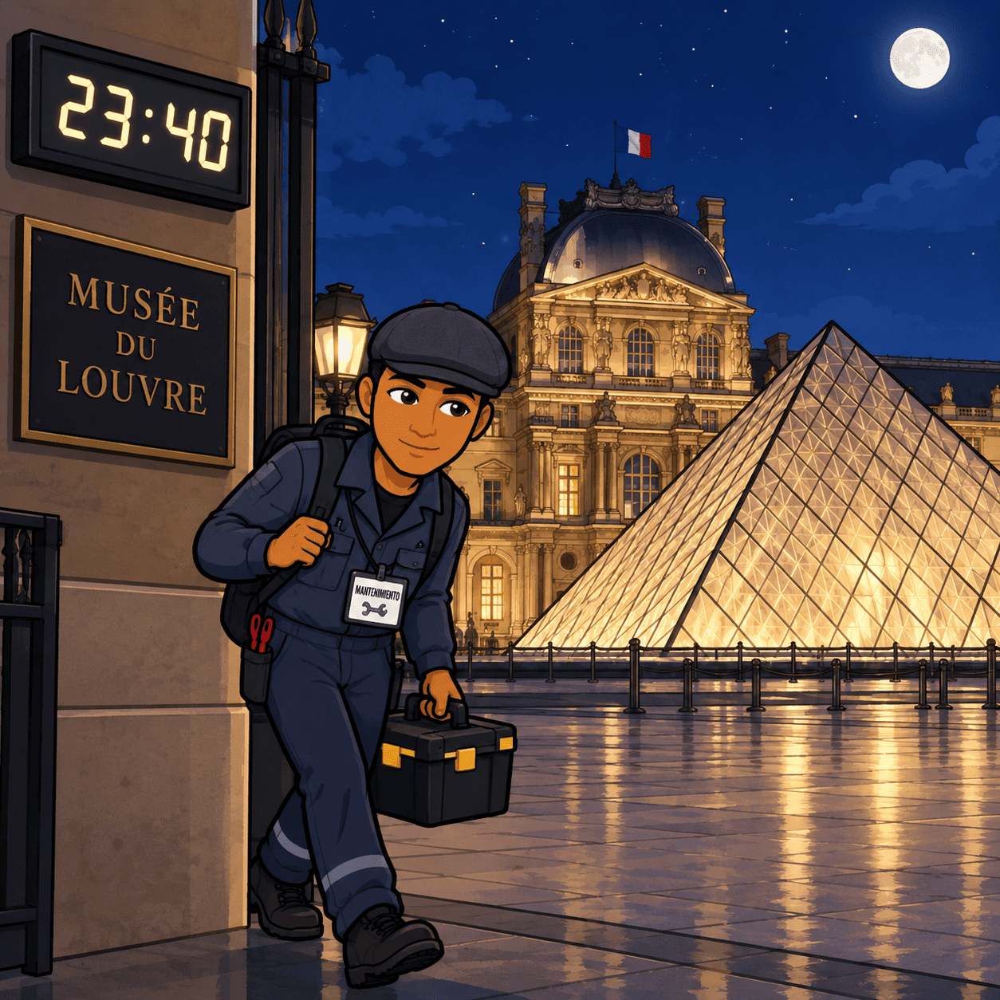

🕵️ LUPIN Y EL GOLPE DE LAS MATEMÁTICAS
París estaba preparada para una noche especial. En el Museo de Arte Moderno se iba a presentar una pieza única: un antiguo reloj de oro valorado en varios millones de euros. La seguridad era máxima. Cámaras, sensores, puertas blindadas y un sistema electrónico controlaban cada rincón del edificio.
Pero había alguien que no estaba preocupado.
Assane Diop, conocido por muchos como Lupin, llevaba varios días preparando su plan. Sabía que no podía entrar por la puerta principal. Tampoco podía utilizar la fuerza. Necesitaba algo mucho más importante: ingenio.
En una pequeña habitación de hotel, Lupin extendió sobre una mesa varios planos del museo.
—Todo tiene un patrón —dijo mientras observaba los planos—. Solo hay que encontrarlo.
📐 El primer problema
El museo tenía una sala rectangular donde se encontraba el reloj. Lupin había descubierto que la longitud de la sala era 6 metros mayor que su anchura. Además, sabía que su superficie era de 72 m².
—Si llamo \(x\) a la anchura, la longitud será \(x + 6\) —pensó.
Por tanto:
\(x(x + 6) = 72\)
Al desarrollar:
\(x² + 6x - 72 = 0\)
Lupin resolvió la ecuación y descubrió que las dimensiones de la sala eran:
8 metros de ancho y 14 metros de largo.
Ahora sabía exactamente dónde estaban colocadas las cámaras.
🔢 El segundo problema
Pero todavía necesitaba conocer la combinación de una puerta de seguridad.
En uno de los documentos encontró una expresión:
\(P(x) = 2x³ + 3x² - 5x + 6\)
Lupin observó que debía dividir este polinomio entre:
\(x + 2\)
Realizó la división y comprobó que el resto era \(24\).
—Interesante... —murmuró—. El número que necesito está escondido en el resto.
Después sustituyó distintos valores en el polinomio. Finalmente descubrió que la combinación estaba relacionada con el valor obtenido al calcular la expresión para \(x = 1\).
\(P(1) = 2 + 3 - 5 + 6 = 6\)
El número \(6\) era una de las cifras de la combinación.
—Una pista más —dijo Lupin.
🚪 La puerta
A las 23:40, Lupin llegó al museo disfrazado de técnico de mantenimiento.

La primera puerta se abría mediante una ecuación sencilla:
\(3x + 12 = 30\)
Lupin calculó mentalmente:
\(3x = 18\)
\(x = 6\)
Introdujo el código y la puerta se abrió.
Pero todavía quedaba una última dificultad.
🎯 El último obstáculo
El sistema de seguridad tenía un sensor que controlaba la distancia de una puerta móvil. Según los planos, la posición segura se encontraba cuando:
\(x² - 10x + 24 = 0\)
Lupin factorizó la ecuación:
\((x - 4)(x - 6) = 0\)
Por tanto:
\(x = 4\) o \(x = 6\)
Solo una de las dos posiciones dejaba libre el camino correcto.
Lupin recordó los planos de la sala.
—La posición \(6\) coincide con la cámara que gira cada treinta segundos.
Esperó el momento exacto.
La cámara giró.
Lupin avanzó.
🎩 El golpe perfecto
A las 23:59, llegó hasta la vitrina donde estaba el reloj.
No rompió el cristal. No activó ninguna alarma. Simplemente utilizó una pequeña herramienta que había preparado para abrir el mecanismo de seguridad.
Guardó el reloj en un maletín y salió siguiendo exactamente el recorrido que había calculado.
Cuando el vigilante llegó a la sala, no encontró nada extraño.
Solo había una pequeña tarjeta sobre la mesa.
En ella aparecía escrito:
«A veces, la mejor herramienta no es una llave. Es saber resolver el problema.»
Al día siguiente, los periódicos hablaban de un robo imposible.
La policía tenía muchas preguntas, pero ninguna respuesta.
Mientras tanto, en un café cercano al Sena, Assane Diop tomaba tranquilamente un café.
Sonrió.
Para él, aquel golpe no había sido cuestión de suerte.
Había sido cuestión de matemáticas.
🧠 Preguntas de comprensión lectora
- ¿Qué objeto iba a ser presentado en el museo?
- ¿Por qué Lupin decidió utilizar su ingenio en lugar de la fuerza?
- ¿Qué relación había entre la anchura y la longitud de la sala?
- ¿Qué ecuación de segundo grado tuvo que resolver Lupin para conocer las dimensiones de la sala?
- ¿Cuáles eran las dimensiones de la sala?
- ¿Qué polinomio tuvo que dividir Lupin y entre qué polinomio lo dividió?
- ¿Qué resultado obtuvo al calcular P(1)?
- ¿Qué ecuación de primer grado tuvo que resolver para abrir la primera puerta?
- ¿Qué soluciones tenía la ecuación de segundo grado del sensor?
- ¿Por qué podemos decir que las matemáticas fueron fundamentales para que Lupin consiguiera realizar el golpe con éxito?
🕵️ LUPIN: PERSONAJES, IGUALDAD Y DESIGUALDADES SOCIALES
La serie Lupin, protagonizada por Assane Diop, no es solamente una historia de robos, misterios y disfraces. A través de sus personajes, la serie también nos invita a reflexionar sobre temas importantes de nuestra sociedad: la igualdad entre hombres y mujeres, el racismo, las diferencias sociales y las oportunidades que tiene cada persona.
👤 Assane Diop: un protagonista diferente
Assane Diop es un hombre negro nacido en Francia y de origen senegalés. Es inteligente, observador y tiene una gran capacidad para planificar. Su personaje está inspirado en Arsène Lupin, el famoso personaje creado por Maurice Leblanc.
Sin embargo, Assane no vive exactamente las mismas experiencias que el Lupin de las novelas originales. Su origen, el color de su piel y su situación económica influyen en la forma en que otras personas lo ven.
A lo largo de la serie, Assane demuestra que la inteligencia no depende del origen, del dinero ni del aspecto físico. Utiliza la observación, las matemáticas, la lógica y el conocimiento de las personas para resolver situaciones complicadas.
Pero también tiene contradicciones. Sus decisiones afectan a otras personas y, en ocasiones, pone en peligro a quienes están cerca de él. Esto hace que no sea un héroe perfecto, sino un personaje que podemos analizar y discutir.
👩 Las mujeres de Lupin: personajes con capacidad para decidir
Uno de los aspectos interesantes de la serie es la presencia de mujeres que no aparecen simplemente como acompañantes del protagonista. Varias de ellas tienen sus propios objetivos, toman decisiones y participan activamente en la historia.
Claire, la madre de Raoul y antigua pareja de Assane, es un personaje independiente. Aunque mantiene una relación complicada con Assane, no acepta todas sus decisiones y defiende sus propias ideas. También se preocupa por proteger a su hijo y construir su propio futuro.
Juliette Pellegrini también ocupa un papel importante. Es una mujer que pertenece a una familia con mucho poder y dinero, pero no se limita a aceptar las decisiones de los demás. Su personaje permite observar cómo el poder y la riqueza pueden influir en las relaciones personales.
También encontramos mujeres que trabajan en ámbitos profesionales diferentes, como la policía, el periodismo o la investigación. Personajes como Youssef Guédira y sus compañeras muestran que las mujeres pueden ocupar puestos relacionados con la investigación, la autoridad y la toma de decisiones.
Además, la serie recupera personajes femeninos relacionados con el universo literario de Lupin, como Irene Adler, una figura tradicionalmente presentada como inteligente y capaz de enfrentarse al propio Lupin.
Por eso, podemos utilizar Lupin para reflexionar sobre el feminismo. El feminismo defiende la igualdad de derechos y oportunidades entre mujeres y hombres. Un personaje femenino empoderado no tiene que ser perfecto ni invencible: significa que tiene capacidad para tomar decisiones, expresar sus opiniones y participar activamente en su propia historia.
🌍 Racismo e identidad
El racismo es otro de los temas importantes de la serie.
Assane es un hombre negro en una sociedad en la que algunas personas lo juzgan por su apariencia antes de conocerlo. En diferentes momentos de la historia aparecen situaciones relacionadas con los prejuicios, la discriminación y la desigualdad.
La serie muestra así una diferencia importante entre cómo es una persona y cómo la sociedad puede percibirla.
Assane utiliza en ocasiones los prejuicios de otras personas para conseguir sus objetivos. Esto permite plantearnos una pregunta:
¿Qué ocurre cuando juzgamos a una persona solamente por su aspecto, su origen o su forma de vestir?
La serie también presenta la identidad cultural de Assane y su relación con Senegal. Su historia personal conecta Francia y Senegal y muestra cómo una persona puede tener varias culturas, experiencias y lugares de referencia.
💰 Desigualdad económica y poder
Otro elemento fundamental es la diferencia entre las personas que tienen mucho dinero y poder y quienes tienen menos recursos.
La familia Pellegrini representa una élite económica con importantes conexiones sociales. Frente a ella encontramos personajes que tienen que trabajar, investigar o luchar para conseguir oportunidades.
La serie plantea así una cuestión relacionada con la desigualdad social:
¿Todas las personas tienen realmente las mismas oportunidades?
Tener dinero puede proporcionar acceso a mejores abogados, contactos, educación, viviendas y oportunidades. Sin embargo, la falta de recursos puede dificultar mucho la vida de una persona.
Lupin también muestra que el poder económico puede utilizarse de forma positiva o negativa. Por eso, la serie nos invita a analizar quién tiene poder, cómo lo consigue y qué consecuencias tiene utilizarlo de una determinada manera.
⚖️ ¿Héroe o delincuente?
Assane es un personaje difícil de clasificar.
Por una parte, intenta descubrir la verdad y enfrentarse a personas que considera responsables de una injusticia. Por otra, utiliza engaños, robos y manipulaciones para conseguir sus objetivos.
Esto nos permite distinguir entre comprender las razones de un personaje y justificar sus acciones.
Podemos entender por qué Assane actúa como lo hace sin tener que considerar que todas sus acciones sean correctas.
Esta contradicción hace que el personaje resulte interesante: no es simplemente "bueno" o "malo". Sus decisiones nos obligan a pensar sobre conceptos como justicia, venganza, libertad y responsabilidad.
🧠 Una serie para pensar
Lupin utiliza los robos y los misterios para entretener, pero también puede servir para reflexionar sobre nuestra sociedad.
La serie nos plantea preguntas relacionadas con la igualdad:
- ¿Juzgamos a las personas por su aspecto?
- ¿Todas las personas tienen las mismas oportunidades?
- ¿Puede existir racismo aunque una persona no sea consciente de sus prejuicios?
- ¿Qué significa que una mujer sea independiente?
- ¿Tener dinero proporciona más poder?
- ¿Es lo mismo justicia que venganza?
- ¿Podemos comprender a un personaje sin justificar todo lo que hace?
La principal enseñanza no tiene que ser que Assane siempre tenga razón. Lo interesante es que sus aventuras nos permiten pensar, argumentar y formar nuestra propia opinión.
Las matemáticas, la lógica y la observación ayudan a Assane a resolver problemas. Pero comprender una sociedad también requiere otras habilidades: pensamiento crítico, empatía y capacidad para analizar diferentes puntos de vista.
Por eso, detrás de los disfraces, los robos y los misterios de Lupin encontramos también una pregunta mucho más importante:
¿Qué podemos hacer para construir una sociedad en la que las oportunidades no dependan del género, del origen, del color de la piel o del dinero?
1. 📖 COMPRENDEMOS EL TEXTO
Lee atentamente el texto «Lupin: personajes, igualdad y desigualdades sociales» y responde.
Preguntas de comprensión
- ¿Quién es Assane Diop y en qué personaje literario está inspirado?
- ¿Qué características utiliza Assane para resolver situaciones complicadas?
- ¿Por qué podemos decir que Assane no es un héroe completamente perfecto?
- ¿Qué características presentan algunos de los personajes femeninos de la serie?
- ¿Qué significa que un personaje femenino esté empoderado?
- ¿Qué relación existe entre Assane y la cultura de Senegal?
- ¿Qué situaciones relacionadas con el racismo aparecen en la serie?
- ¿Cómo puede influir el dinero en las oportunidades que tiene una persona?
- ¿Por qué Assane puede considerarse un personaje con contradicciones?
- ¿Qué diferencia existe entre comprender las razones de una persona y justificar sus acciones?
2. ⚖️ PENSAMOS SOBRE LA IGUALDAD
Ahora no basta con comprender el texto. Tenemos que pensar y argumentar.
Responde con 2-4 líneas a cada pregunta.
A. Mujeres y empoderamiento
11. ¿Crees que un personaje femenino tiene que ser fuerte, valiente o independiente para ser considerado un personaje empoderado? Explica tu respuesta.
12. ¿Por qué es importante que las mujeres aparezcan en la ficción desempeñando diferentes profesiones y tomando sus propias decisiones?
B. Racismo
13. ¿Por qué juzgar a una persona por su aspecto puede ser injusto?
14. Imagina que una persona entra en una tienda y el dependiente la vigila únicamente por su color de piel. ¿Qué problema aparece en esta situación?
C. Desigualdad
15. ¿Crees que tener más dinero puede proporcionar más oportunidades? Pon un ejemplo.
16. ¿Significa tener menos recursos que una persona tenga menos capacidades? Razona tu respuesta.